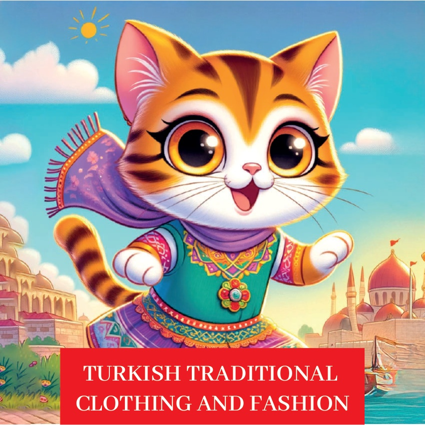
1

2

3
Karakmel adında çok meraklı bir küçük kedi vardı. Karakmel farklı yerlerin kültürlerini keşfetmeyi çok severdi. Bir gün, Karakmel Türkiye'nin geleneksel kıyafetlerini ve modasını öğrenmeye karar verdi..
Türkiye'ye gittiğinde, çok güzel renkli elbiseler gördü. Bazı elbiselerde işlemeler vardı, bazıları desenliydi. Karakmel, bu elbiselerin her birinin farklı bir hikayesi olduğunu düşündü..
Karakmel, Türkiye'deki insanlar gibi güzel ve renkli kıyafetler giymek istedi. Öğrendiği şeyleri arkadaşlarına anlattı. Hepsi de Türkiye'nin kültürünün ne kadar güzel ve çeşitli olduğunu gördüler. Karakmel çok mutlu olmuştu. Yeni bir şeyler öğrenmenin ve farklı kültürleri keşfetmenin ne kadar eğlenceli olduğunu anlamıştı.
4
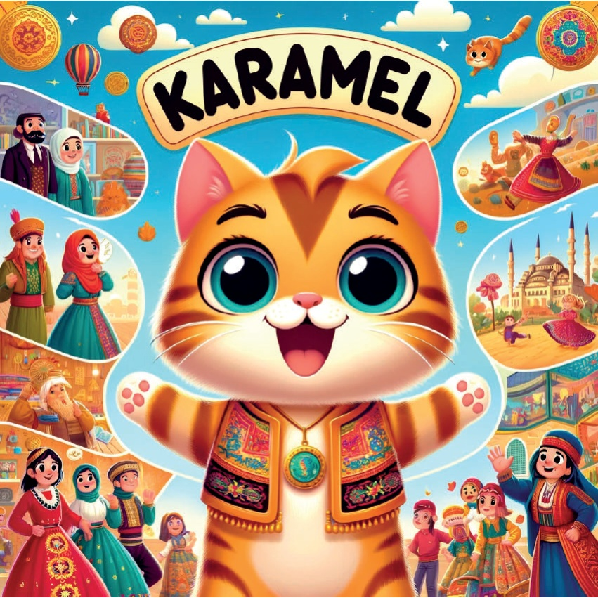
5
مرمرہ علاقہ - استانبول: عثمانی لباس.
کرمیل کی پہلی منزل استانبول تھی۔ وہاں اس نے خوبصورت عثمانی لباس دیکھے۔ رنگین کپڑے اور دلکش ڈیزائن اس کو بہت حیران کن لگے۔
6
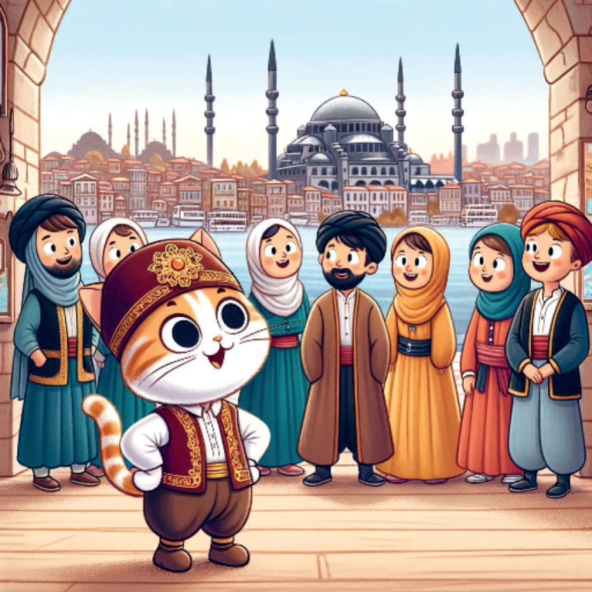
7
Aegean Bölgesi - İzmir: Zeybek Kıyafetleri.
Karamel sonra İzmir'e gitti. Orada geleneksel Zeybek kıyafetlerini gördü. Renkli gömlekler ve bol pantolonlar hareketli Zeybek dansı için çok uygun görünüyordu.
8
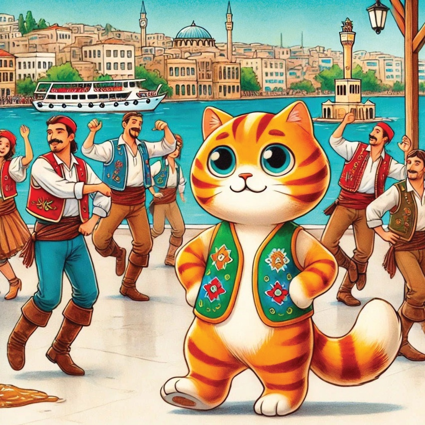
9
## انطاليا میں یورک کے لباس.
انطاليا کے علاقے میں، کارامل نے یورکと呼ばれる گھوم پھر 돌نے والے لوگوں کے روایتی لباس کے بارے میں جانا۔ ان کے کپڑے بہت پریکٹیکل تھے اور خوبصورت انداز میں سجے ہوئے تھے۔
10
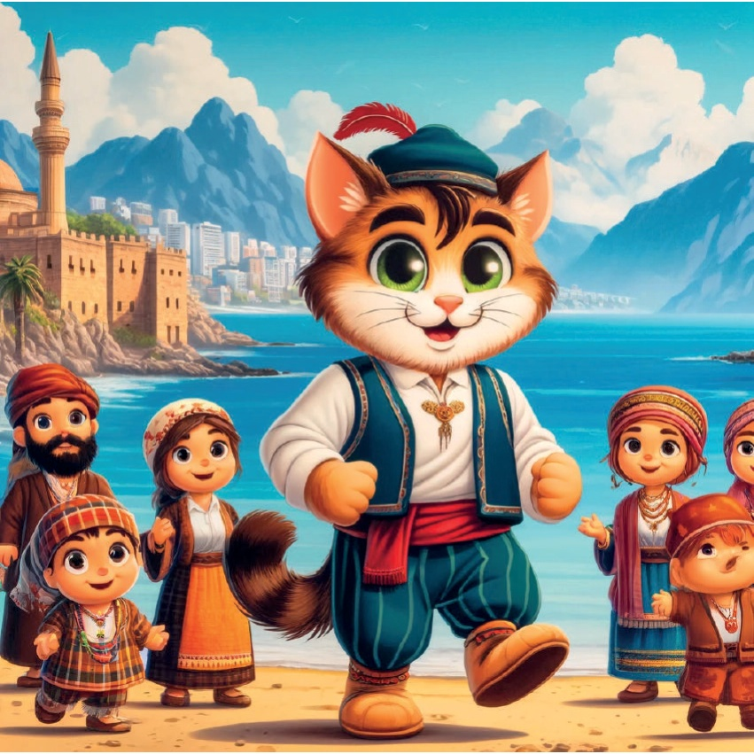
11
Ankara'ya Yolculuk.
Ankara'nın kalbinde, Seğmen kostümlerinin güzel bir gösterisi vardı. Seğmen Kostümler Karamel, Ankara'ya geldi ve bu gösteriyi gördü..
Seğmenlerin geleneksel kıyafetleri çok şık ve etkileyiciydi. Dans eden Seğmenlerin giydiği bu kıyafetler, onların hareketlerini daha da güzel gösteriyordu. Çok güzel görünüyordu!
12
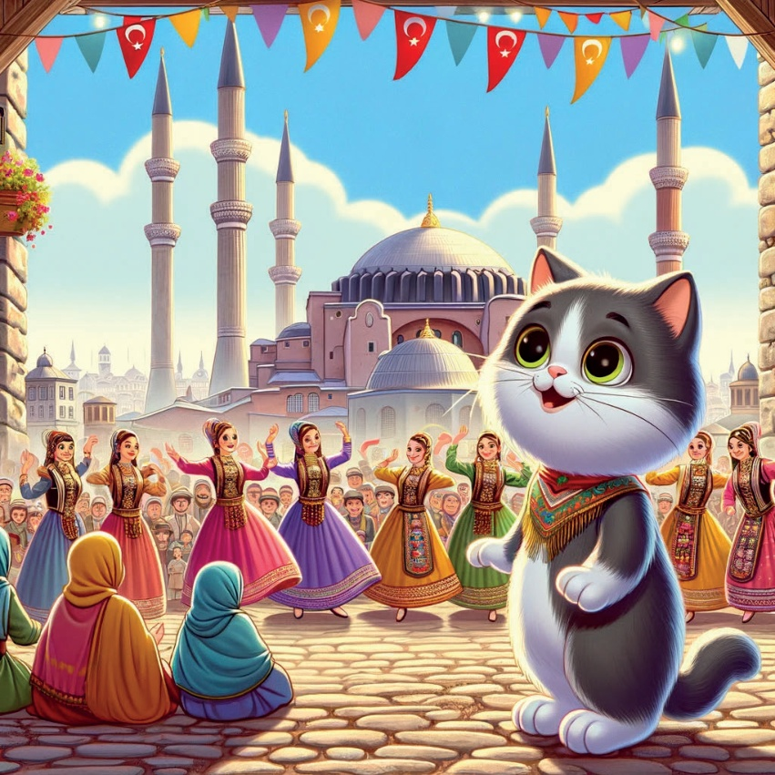
13
Karadeniz Bölgesi - Trabzon: Kemençe Oyuncularının Kıyafetleri.
Trabzon'da Karamel, kemençe çalanların geleneksel kıyafetlerini gördü. Siyah bol pantolonları ve renkli gömlekleri, hareketli Horon dansı için çok yakındı.
14
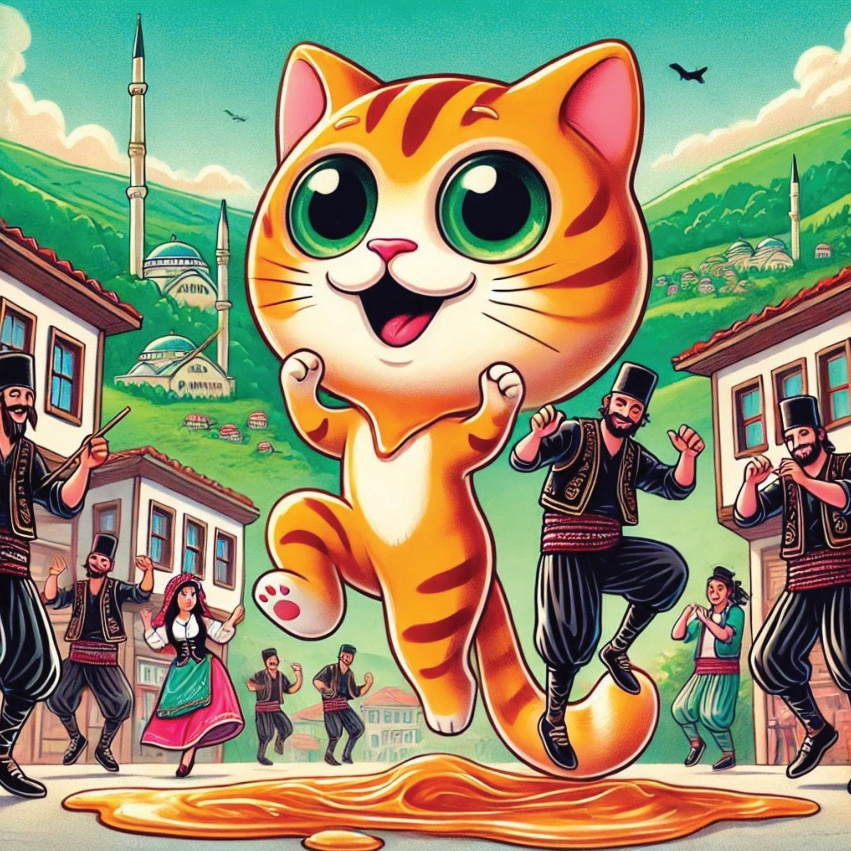
15
**شرق ανατοल्या - ارض روم: ارض رومमधील बारचे पारंपरिक कपडे**.
ارض رومमधील ارض رومमध्ये، کارملने बार नृत्यासाठी वापरल्या जाणाऱ्या पारंपरिक कपड्या पाहिल्या. नर्तकानी खूप सुंदर नक्षीकाम केलेले कपडे घातले होते, जे त्यांच्या संस्कृतीची ओळख करून देत होते.
16
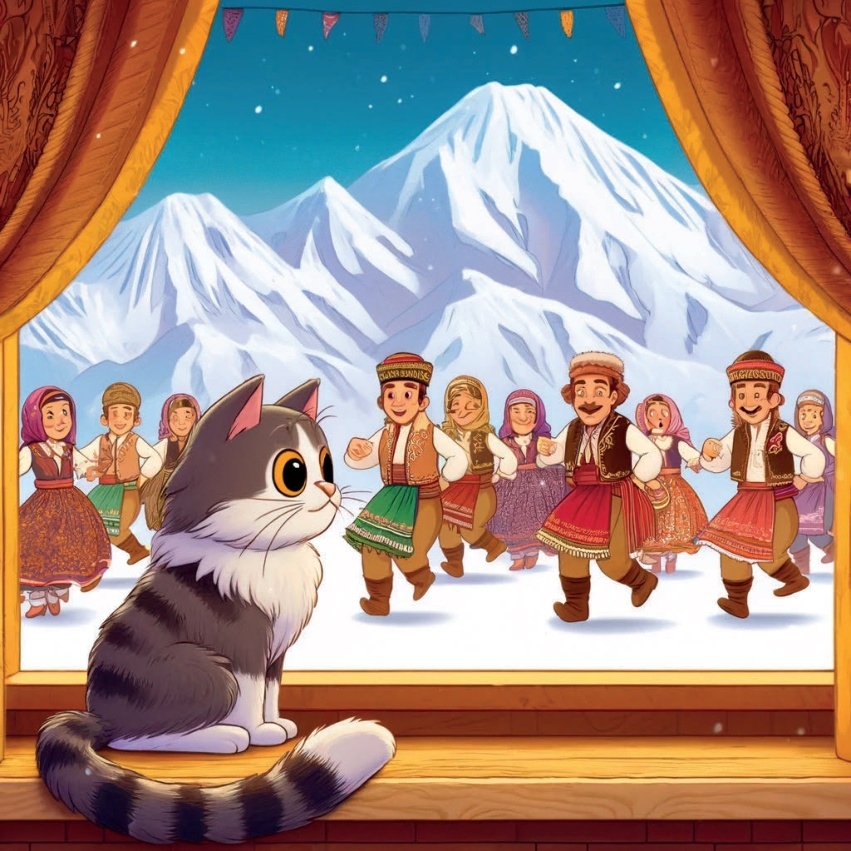
17
## ملودی کی مسافرت: مر دریا.
جنوب مشرقی اناطولیا - مر دریا: کارمل کا آخری سفر مر دریا تھا۔ یہاں اس نے علاقے کے روایتی لباس دیکھے۔ روشن رنگ اور پیچیدہ ڈیزائن آنکھوں کو بہت خوشی دلانے والے تھے۔
18
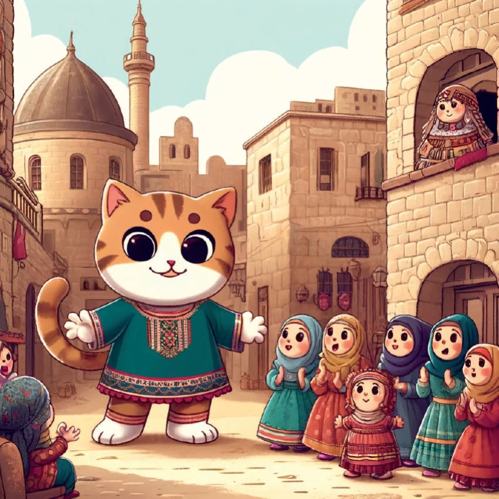
19
## کرم میل کی کہان – ترکی کا خوبصورت لباس.
کرم میل نے بہت دِل سے دیکھا کہ ترکی کے پرانے لباس اور نمونے کس طرح سے وہاں کے لوگوں کی پرانی اور خوبصورت تہذیب کو یاد دلاتے ہیں۔ وہ خوشی خوشی اپنے گھر واپس گئی اور اگلے ایڈونچر کے بارے میں سوچتی رہی۔
20
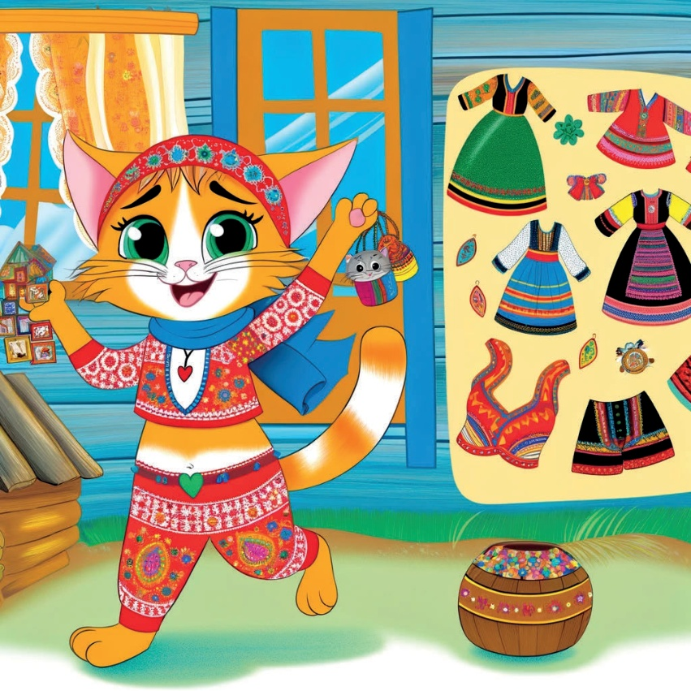
21
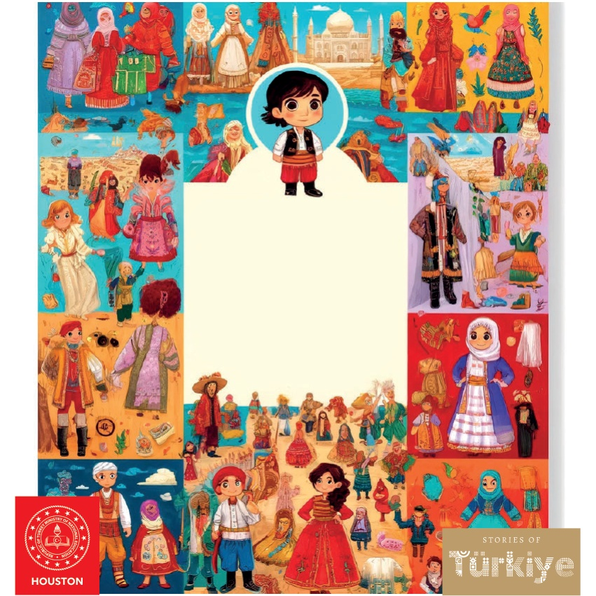
22